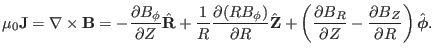

Next:
Poloidal current density
Up:
Axisymmetric magnetic field
Previous:
Rational surfaces vs. irrational
Plasma current density
Using Ampère's law, the current density can be written in terms of the magnetic field as

(
36
)
Subsections
Poloidal current density
Toroidal current density
yj 2018-03-09